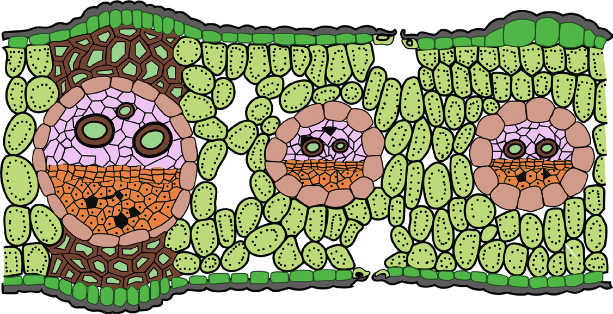
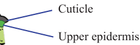
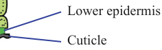
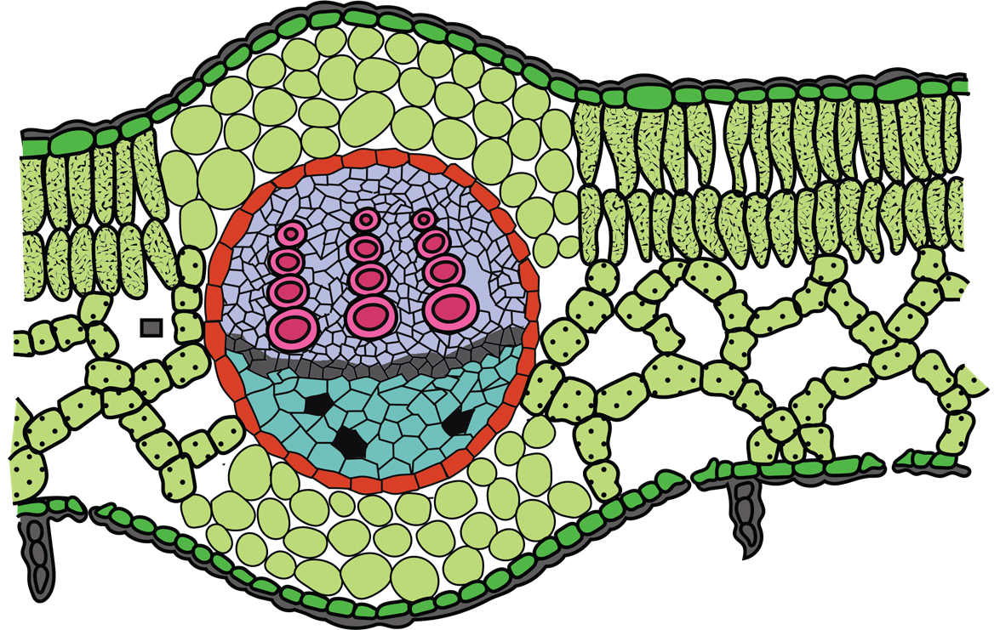

83
Student’s Book - Form Two

Biology for Secondary Schools
Vascular bundles in leaves
Both the monocot and dicot leaves have vascular bundles surrounded by a bundle sheath. The bundle sheath has one or more layers of ground tissue called parenchyma cells. The main function of the bundle sheath is to protect the leaf veins.
Monocotyledonous leaves
In monocot leaves, vascular bundles form parallel veins. The phloem tissue is located towards the lower epidermis of the leaf while the xylem tissue is located towards the upper epidermis, as shown in Figure 4.10.

Cuticle
Upper epidermis
Xylem
Bundle sheath
Phloem
Lower epidermis
Cuticle
Stomata


Figure 4.10: Cross-section of a monocot leaf
Dicotyledonous leaves
In the dicot leaf, vascular bundles form net-like veins. Like in the monocot leaf, the xylem tissue in a dicot leaf is located towards the upper epidermis of the leaf.
The phloem tissue is located towards the lower epidermis of the leaf, as shown in Figure 4.11.

Cuticle
Upper epidermis
Bundle sheath
Xylem
Cambium
Phloem
Lower epidermis
Cuticle
Figure 4.11: Cross-section of a dicot leaf
08/04/2026 10:18:23